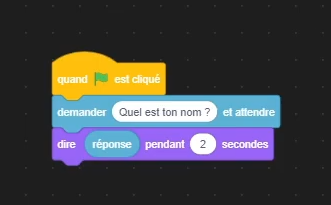
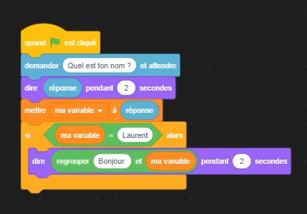
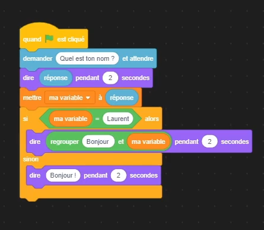

Bonjour, ceci est un résumé textuel de la première vidéo de la série Apprendre Scratch. (Ce texte reprend approximativement et pas forcément dans le même ordre que dans la vidéo les notions abordés, le lien YouTube de la vidéo est disponible en bas de cette page ou vous pouvez cliquer ici)
Dans ce première exemple :

On peut comprendre du code que l'action d'appuyer sur le drapeau vert déclenche la fonction de faire demander a notre personnage la question "Quelle est ton nom ?" puis de lui faire dire notre réponse pendant 2 secondes.
Ici, la variable utilisé est pré créer par le systeme et se nomme "réponse", c'est une variable automatique qui stoque la réponse de l'utilisateur a la fonction : 'demander ""Quel est ton nom ?"" et attendre'
Dans ce deuxième exemple :

On peut voir la suite du programme de base. La suite est simple, nous avons créer la variable "ma variable" et nous lui avons assigner une valeur, la valeur de la réponse de l'utilisateur juste avant. La réponse de l'utilisateur est donc maintenant stoquée dans la variable "ma variable" et aussi dans la variable automatique "réponse".
La suite est que si, la variable "ma variable" est égal a la valeur "Laurent" alors mon personnage va répondre "Bonjour " et la valeur de la variable.
Ex : si la valeur entré a la question "Quel est ton nom ?" est Laurent alors le personnage dira : "Bonjour Laurent".
(ATTENTION: faire bien attention a mettre un espace apres le "Bonjour" sinon le résultat obtenue sera le suivant "BonjourLaurent")
Si la valeur de la variable n'est pas égal a "Laurent" c'est a dire si on a écrit un autre nom que Laurent a la question posé par le programme, alors le programme s'arretera avant et ne dira pas "Bonjour Laurent" mais executera seulement le début et dira la valeur de la variable. A tenir compte que même si la valeur de la variable est égal a Laurent, la première partie du programme ou il ne fait que répéter la réponse s'éxecutera quand même et nous auront deux messages : d'abord "Laurent" et ensuite "Bonjour Laurent", si la variable était égal a Dominique : d'abord "Dominique et ensuite le programme s'arrête (valeur non égal a Laurent)
Dans ce troisème exemple :

On peut voir qu'une dernière action s'est rajouté, "sinon". On a juste remplacer le controle "si ... alors" par "si ... alors ... sinon".
Ce bloc sert a poser une alternative si le "si" n'est pas utilisé. Ce programme fait que a la fin si la valeur n'est pas égal a "Laurent" alors au lieu d'arrêter le programme simplement le personnage va quand même dire Bonjour. (ATTENTION : le personnage ne dira "Bonjour" que et uniquement si la variable n'est pas égal a "Laurent", si la variable est égal a "Laurent" le personnage dira "Bonjour Laurent" et pas juste Bonjour)
Voila c'est tout pour le résumé textuel de la première vidéo sur Scratch
Passez une Bonne Journée
Lien de la vidéo : https://youtu.be/xCYKpS2tQ1k
created with
Website Builder Software .